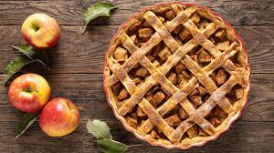

Elmalı Turta Tarifi
Misafir ağırlamalarımızda, kahvelerimizde, sohbetlerimizde yer alan tatlardan. Özellikle elmalı turta tarifi, hepimizin tarif defterlerinde, internet sitelerinde favorilerinde yer alıyor. Artık o bizden biri sayılır. Özellikle kış ve sonbahar aylarına çok yakışan enfes tatlı elmalı turta tarifimiz karşınızda!
Tarif : Aslıhan İkiel
Kaç kişilik: 10
Hazırlama Süresi : 40 dakika
Pişme Süresi : 35 dakika

Elmalı Turta İçin Malzemeler
Hamuru için:
- 2 adet yumurta
- 250 gr margarin
- Yarım çay bardağı süt
- 8 yemek kaşığı şeker
- 1 paket vanilya
- 1 paket kabartma tozu
- 5 su bardağı un
İçi için;
- 4 adet kırmızı elma
- 8 yemek kaşığı şeker
- 2 çay kaşığı tarçın
- çekilmiş ceviz
Elmalı Turta Yapılışı
- Şeker, kabartma tozu ve vanilyayı koyup bir kaşık yardımıyla hafif karıştırın.
- Daha sonra aldığı kadar un ekleyip kulak memesi kıvamında hamur elde edin. Hamur dinlenirken iç harcını hazırlayın
- Elmaları soyup rendeleyin. Bir tencereye alıp şekeri ekleyin. Elmalar suyunu çekene kadar pişirin. Piştikten sonra ocaktan alın ve tarçını ekleyip karıştırın.
- Turtayı pişireceğimiz kabı hafif sıvı yağ ile yağlayın.
- Hamurun bir kısmını üst şeritleri için ayırın. Hamuru kabımıza yayın. Elma harcını hamurun üzerine yayın.
- Üstüne şeritleri yapın ve yumurta sarısı sürün.
- Elmalı turtayı 180 derece ısıtılmış fırında pişirin. (benim fırınım 180 derecede düşük kalıyor 200 de pişiriyorum).
- Turta piştikten sonra pudra şekeri serpin. Elmalı turtamız servise hazır, afiyet olsun.